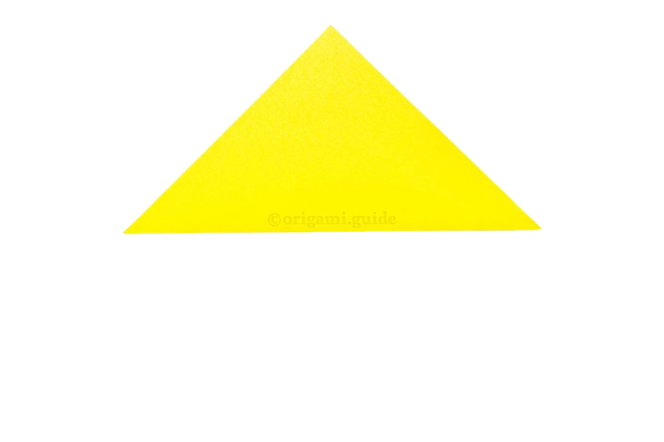
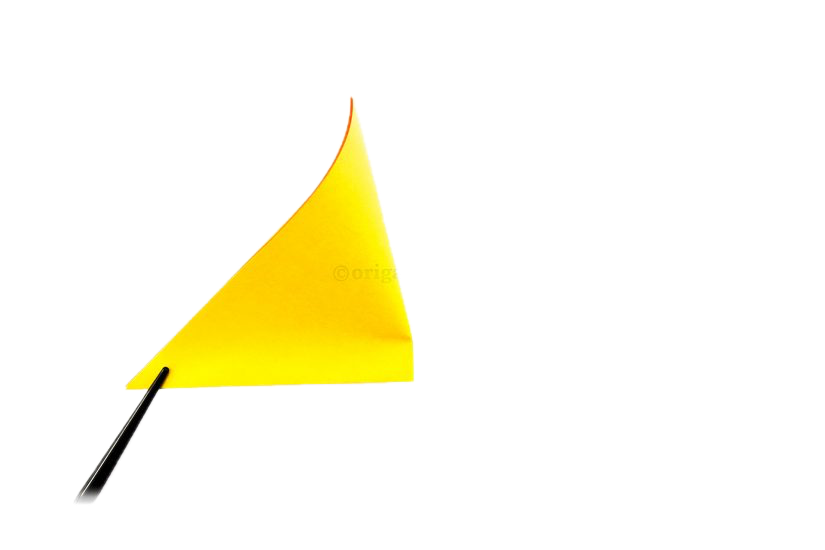
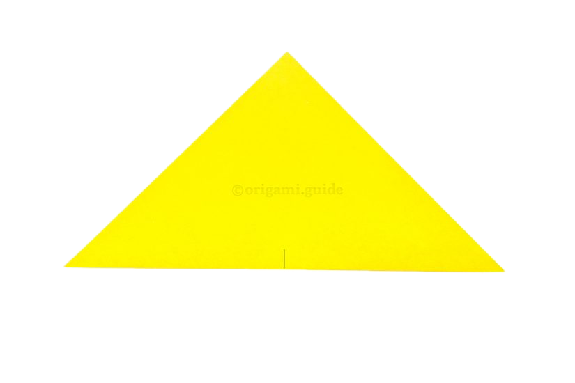
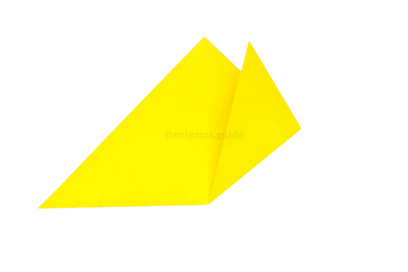
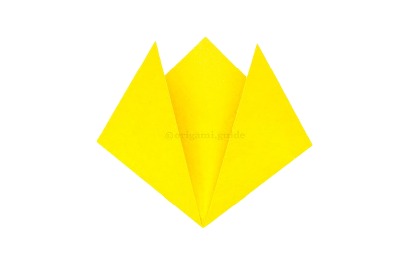
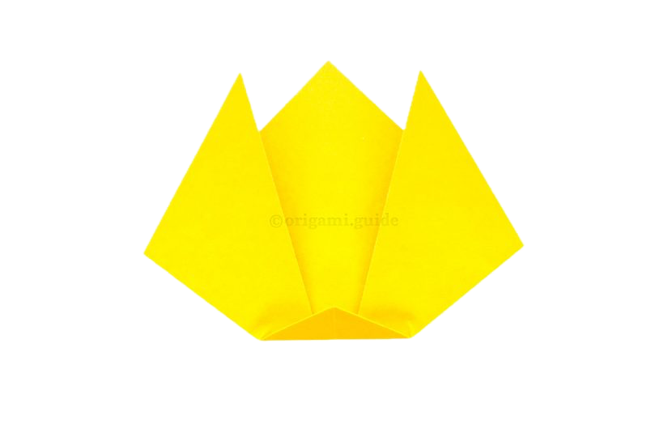

with the white side up, fold the bottom corner up to the top corner.
take the right points over to the left and make a small crease along the bottom edge to mark the middle.
unfold the previous step to create a crease.
take the right point and bring it up and to the right at an angle away from the top point.
do the same thing on the left side, try to make it match the right side.
fold the bottom point up a little, to form the cat's chin.
🐈 fire emoji